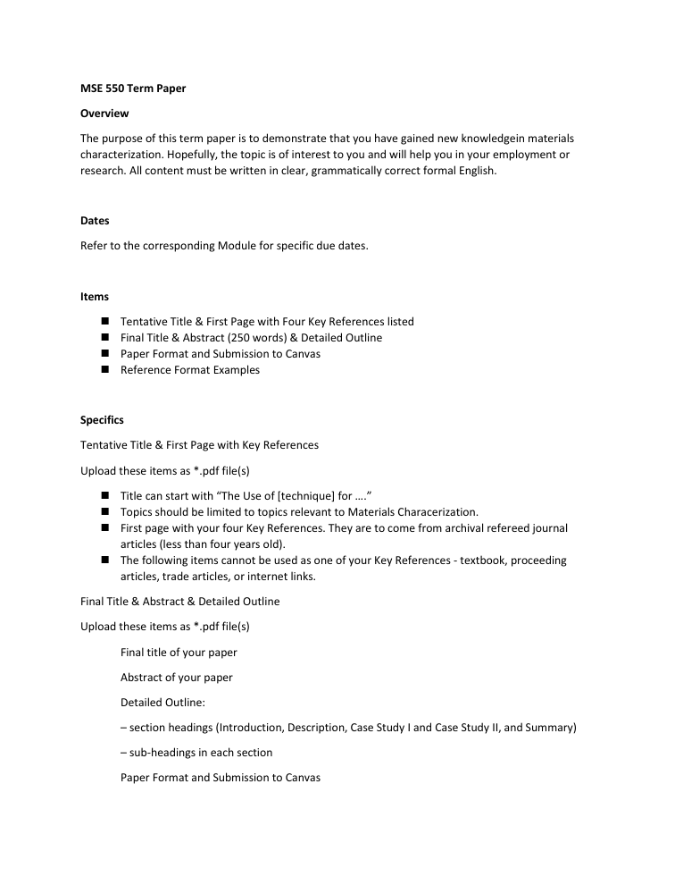

SEM-based microstructural characterization and failure analysis term project

A graduate materials-characterization (MSE 550, Advanced Materials Characterization) term project on the use of Scanning Electron Microscopy for microstructural characterization and failure analysis of materials. The deliverables include a peer-reviewed-literature term paper proposal, a 250-word abstract/synopsis, a 17-slide technical presentation, and a Python/Jupyter notebook that generates synthetic microstructure figures. The work covers SEM electron-matter interactions, detection modes (SE, BSE, EDS, EBSD, cathodoluminescence), and two literature case studies.
The project explains SEM fundamentals (elastic/inelastic electron scattering, characteristic X-ray and cathodoluminescence generation) and analytical detection modes, then applies them through two case studies drawn from recent journal literature. One case examines multimodal correlative microscopy (SEM-EDS, XCT, nanoindentation) of a meteorite; the other examines SEM fractography and emerging computational striation-analysis methods for failure prediction. A supporting notebook procedurally generates synthetic SEM/TEM-style images with NumPy array tiling and SciPy Gaussian smoothing for figure illustration.
Delivered a complete term-paper proposal, abstract, 17-slide presentation, and a figure-generating notebook; the presentation synthesizes literature findings (including reported mineral-phase moduli/hardness values such as olivine ~202.7 GPa modulus and 16.4 GPa hardness) to conclude that modern SEM bridges microstructural features and macroscopic mechanical performance.